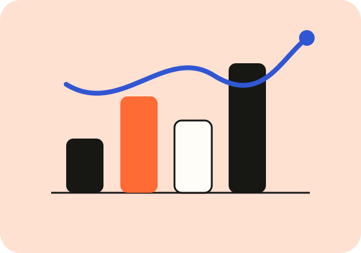
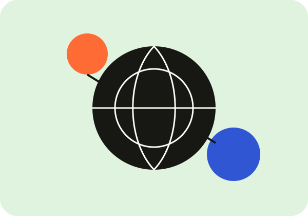

Почему мы закрываем форму, не заполнив её
Большая история о маленьких решениях перед первым кликом.
Читать материал →
О цифровых продуктах, данных и привычных вещах, которыми мы пользуемся каждый день — без лишнего шума, но с вниманием к деталям.

Короткие эссе на один вопрос: наблюдение, пример, данные и вывод, который хочется проверить.

Большая история о маленьких решениях перед первым кликом.

Почему одному числу почти всегда нужен второй вопрос.

Не только просмотры: маршруты, входы, выходы и источники.
Что делать, когда поиск ничего не нашёл.
Несколько проверок до красивого графика.
Интерфейс показывает решение, данные — его последствия, а интернет связывает всё в реальные пользовательские маршруты.
«Наблюдения» — авторский учебный проект Натальи Лысенко. Здесь цифровая среда разбирается через понятные повседневные ситуации — без попытки превратить каждое наблюдение в универсальное правило.